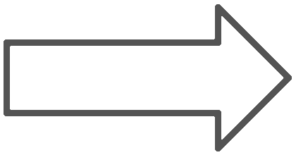

Still Pictures of Project
Modeling Mike Wazowski
Previous model of Mike from the creative scene assignment.

New model of Mike with more detail, such as his mouth, limbs and horns.
Initially, when I had made Mike, I just wanted to get his general shape, color and eye down, so that it would be distinguisable who I was trying to model after. For the final project, I wanted to be more precise in his features and create the necessary curves and shapes to make his body parts more defined, especially when it came to his mouth, limbs, horns and even head shape, as well as the placement of the features.
Modeling the Door
The door model includes a frame, blinker, door, door knob and hanger rod. The frame has a metal texture-mapped onto a phong material, and the door has a door image texture-mapped onto both sides of a rectangular box of phong material.
Animating Mike Wazowski's Scream
This is a wider card with supporting text below as a natural lead-in to additional content. This content is a little bit longer.
This is a wider card with supporting text below as a natural lead-in to additional content. This content is a little bit longer.
This is a wider card with supporting text below as a natural lead-in to additional content. This content is a little bit longer.
Animating Movement of the Door
This is a wider card with supporting text below as a natural lead-in to additional content. This content is a little bit longer.
This is a wider card with supporting text below as a natural lead-in to additional content. This content is a little bit longer.
This is a wider card with supporting text below as a natural lead-in to additional content. This content is a little bit longer.
Camera Movement During Animation
This is a wider card with supporting text below as a natural lead-in to additional content. This content is a little bit longer.
This is a wider card with supporting text below as a natural lead-in to additional content. This content is a little bit longer.
This is a wider card with supporting text below as a natural lead-in to additional content. This content is a little bit longer.